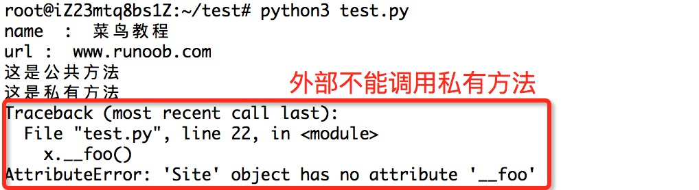

Python3 Object-Oriented
Python has been an object-oriented language from the very beginning of its design. Because of this, it is very easy to create classes and objects in Python. This chapter will introduce Python's object-oriented programming in detail.
If you have not been exposed to object-oriented programming languages before, you may need to first understand some basic features of object-oriented languages and form a basic concept of object orientation in your mind, which will help you learn Python's object-oriented programming more easily.
Next, let's briefly understand some basic features of object orientation.
Introduction to Object-Oriented Technology
- Class:Used to describe a collection of objects with the same attributes and methods. It defines the attributes and methods common to each object in the collection. An object is an instance of a class.
- Method:A function defined in a class.
- Class variable:A class variable is shared among all instantiated objects. Class variables are defined in the class and outside any function body. Class variables are usually not used as instance variables.
- Data members:Class variables or instance variables are used to process data related to the class and its instance objects.
- Method overriding:If a method inherited from the parent class cannot satisfy the needs of the subclass, it can be rewritten. This process is called method override.
- Local variable:A variable defined in a method, which only affects the class of the current instance.
- Instance variable:In the declaration of a class, attributes are represented by variables. Such variables are called instance variables. An instance variable is a variable modified with self.
- Inheritance:That is, a derived class inherits the fields and methods of a base class. Inheritance also allows an object of a derived class to be treated as an object of the base class. For example, there is such a design: an object of type Dog derived from the Animal class, which simulates an "is-a" relationship (for example, Dog is an Animal).
- Instantiation:Creating an instance of a class, the concrete object of the class.
- Object:An instance of a data structure defined by a class. Objects include two data members (class variables and instance variables) and methods.
Compared with other programming languages, Python added the class mechanism without adding new syntax and semantics as much as possible.
Classes in Python provide all the basic functions of object-oriented programming: the class inheritance mechanism allows multiple base classes, derived classes can override any method in the base class, and methods can call methods with the same name in the base class.
Objects can contain any number and type of data.
Class Definition
The syntax format is as follows:
After a class is instantiated, its attributes can be used. In fact, after creating a class, its attributes can be accessed through the class name.
Class Objects
Class objects support two operations: attribute reference and instantiation.
Attribute references use the same standard syntax as all attribute references in Python:obj.name。
After a class object is created, all names in the class namespace are valid attribute names. So if the class definition is like this:
Examples (Python 3.0+)
The above created a new class instance and assigned the object to a local variable x, where x is an empty object.
The output of executing the above program is:
MyClass 类的属性 i 为： 12345 MyClass 类的方法 f 输出为： hello world
The class has a special method named __init__() (constructor method), which is automatically called when the class is instantiated, like this:
If a class defines the __init__() method, the class instantiation operation will automatically call the __init__() method. As shown below, when instantiating the class MyClass, the corresponding __init__() method will be called:
x = MyClass()
Of course, the __init__() method can have parameters, and parameters are passed through __init__() to the class instantiation operation. For example:
Examples (Python 3.0+)
self represents the instance of the class, not the class
The only special difference between class methods and ordinary functions is that they must have an additionalfirst parameter name, which by convention is named self.
The execution result of the above example is:
<__main__.Test instance at 0x100771878> __main__.Test
It can be clearly seen from the execution result that self represents the instance of the class, representing the address of the current object, while self.class points to the class.
self is not a Python keyword. If we change it to runoob, it will still execute normally:
The execution result of the above example is:
<__main__.Test instance at 0x100771878> __main__.Test
In Python, self is a conventional name used to represent the instance (object) of a class itself. It is a reference to the instance, allowing the class's methods to access and manipulate the instance's attributes.
When you define a class and define methods in the class, the first parameter is usually named self. Although you can use other names, it is strongly recommended to use self to maintain code consistency and readability.
Example
def __init__(self, value):
self.value = value
def display_value(self):
print(self.value)
# Create an instance of a class
obj = MyClass(42)
# Call a method of the instance
obj.display_value() # Output 42
In the above example, self is a reference pointing to the class instance. It is used in the__init__constructor to initialize the instance's attributes, and also indisplay_valuemethods to access the instance's attributes. By using self, you can access and manipulate the instance's attributes in the class's methods, thereby implementing the class's behavior.
Class Methods
Inside the class, use thedefkeyword to define a method. Unlike general function definitions, class methods must include the parameter self, and it must be the first parameter. self represents the instance of the class.
Examples (Python 3.0+)
The output of executing the above program is:
runoob 说: 我 10 岁。
Inheritance
Python also supports class inheritance. If a language does not support inheritance, classes are meaningless. The definition of a derived class is as follows:
A subclass (derived class DerivedClassName) will inherit the attributes and methods of the parent class (base class BaseClassName).
BaseClassName (the base class name in the example) must be in the same scope as the derived class definition. In addition to classes, expressions can also be used. This is very useful when the base class is defined in another module:class DerivedClassName(modname.BaseClassName):
Examples (Python 3.0+)
The output of executing the above program is:
ken 说: 我 10 岁了，我在读 3 年级
Multiple Inheritance
Python also has limited support for multiple inheritance. The class definition for multiple inheritance is as follows:
Note the order of parent classes in parentheses. If the parent classes have a method with the same name and the subclass does not specify which one when using it, Python searches from left to right. That is, when the method is not found in the subclass, it checks the parent classes from left to right to see whether they contain the method.
Examples (Python 3.0+)
The output of the above program is:
我叫 Tim，我是一个演说家，我演讲的主题是 Python
Method Overriding
If a parent class method cannot meet your needs, you can override the parent class method in the subclass. Example:
Examples (Python 3.0+)
super() functionis used to call a method of the parent class (superclass).
The output of the above program is:
调用子类方法 调用父类方法
More documentation:
Explanation of Python subclass inheriting the parent class constructor
Class Attributes and Methods
Private Attributes of a Class
__private_attrs: Starts with two underscores, declaring the attribute as private. It cannot be used or directly accessed outside the class. When used in methods inside the class...self.__private_attrs。
Class Methods
Inside a class, use the def keyword to define a method. Unlike ordinary function definitions, a class method must include a parameterself, and it must be the first parameter,selfrepresenting the instance of the class.
selfIts name is not fixed; you can also usethis, but it is best to follow the convention.self。
Private Methods of a Class
__private_method: Starts with two underscores, declaring the method as a private method. It can only be called inside the class, not outside the class.self.__private_methods。
Example
The following is an example of class private attributes:
Examples (Python 3.0+)
The output of the above program is:
1
2
2
Traceback (most recent call last):
File "test.py", line 16, in <module>
print (counter.__secretCount) # 报错，实例不能访问私有变量
AttributeError: 'JustCounter' object has no attribute '__secretCount'
The following is an example of class private methods:
Examples (Python 3.0+)
The execution result of the above example:

Special methods of a class:
- __init__ :Constructor, called when an object is created
- __del__ :Destructor, used when releasing an object
- __repr__ :Printing, conversion
- __setitem__ :Assignment by index
- __getitem__:Get value by index
- __len__:Get length
- __cmp__:Comparison operation
- __call__:Function call
- __add__:Addition operation
- __sub__:Subtraction operation
- __mul__:Multiplication operation
- __truediv__:Division operation
- __mod__:Modulo operation
- __pow__:Power
Operator Overloading
Python also supports operator overloading. We can overload the special methods of a class. Example:
Examples (Python 3.0+)
The execution result of the above code is as follows:
Vector(7,8)Other extensions
Xiaomengzhu
165***0317@qq.com
For the__str__method, here is a more intuitive example:
class people: def __init__(self,name,age): self.name=name self.age=age def __str__(self): return '这个人的名字是%s,已经有%d岁了！'%(self.name,self.age) a=people('孙悟空',999) print(a)Output:
Xiaomengzhu
165***0317@qq.com
JasinChen
402***306@qq.com
In the latest Python 3.7 (2018.07.13), the class constructor was simplified.
Version 3.7:
from dataclasses import dataclass @dataclass class A: x:int y:int def add(self): return self.x + self.yEquivalent to the previous:
class A: def __init__(self,x,y): self.x = x self.y = y def add(self): return self.x + self.yJasinChen
402***306@qq.com
selfeasy
ZLT***lfeasy@qq.com
Static methods, ordinary methods, and class methods of classes in Python3
Static method: A method decorated with @staticmethod and without a self parameter is called a static method. A class's static method can have no parameters and can be called directly using the class name.
Ordinary method: It has a self parameter by default and can only be called by an object.
Class method: It has a cls parameter by default, can be called by both the class and an object, and needs to be decorated with @classmethod.
class Classname: @staticmethod def fun(): print('静态方法') @classmethod def a(cls): print('类方法') # 普通方法 def b(self): print('普通方法') Classname.fun() Classname.a() C = Classname() C.fun() C.a() C.b()selfeasy
ZLT***lfeasy@qq.com
chise
531***371@qq.com
Reverse operator overloading:
Compound operator overloading:
When overloading operators:
#!/usr/bin/python3 class Vector: def __init__(self, a, b): self.a = a self.b = b def __str__(self): return 'Vector (%d, %d)' % (self.a, self.b) def __repr__(self): return 'Vector (%d, %d)' % (self.a, self.b) def __add__(self,other): if other.__class__ is Vector: return Vector(self.a + other.a, self.b + other.b) elif other.__class__ is int: return Vector(self.a+other,self.b) def __radd__(self,other): """反向算术运算符的重载 __add__运算符重载可以保证V+int的情况下不会报错，但是反过来int+V就会报错，通过反向运算符重载可以解决此问题 """ if other.__class__ is int or other.__class__ is float: return Vector(self.a+other,self.b) else: raise ValueError("值错误") def __iadd__(self,other): """复合赋值算数运算符的重载 主要用于列表，例如L1+=L2,默认情况下调用__add__，会生成一个新的列表， 当数据过大的时候会影响效率，而此函数可以重载+=，使L2直接增加到L1后面 """ if other.__class__ is Vector: return Vector(self.a + other.a, self.b + other.b) elif other.__class__ is int: return Vector(self.a+other,self.b) v1 = Vector(2,10) v2 = Vector(5,-2) print (v1 + v2) print (v1+5) print (6+v2)chise
531***371@qq.com
FS
429***f0967@qq.com
FS
429***f0967@qq.com
Xiang Shi Yi Ge Cai Niao
141***0013@qq.com
About __name__
First, you need to understand that __name__ is a built-in class attribute in Python. It inherently exists in a Python program and represents the corresponding program name.
For example, in the shown piece of code (this script is named pcRequests.py), I only defined a function but did not run it anywhere. So after running this piece of code, we can see that this function was not called. However, when we run this code, the value of __name__ for this code is __main__ (when a program is run as the main program, its built-in name is __main__).
import requests class requests(object): def __init__(self,url): self.url=url self.result=self.getHTMLText(self.url) def getHTMLText(url): try: r=requests.get(url,timeout=30) r.raise_for_status() r.encoding=r.apparent_encoding return r.text except: return "This is a error." print(__name__)Result:
When pcRequests.py is called as a module, its __name__ is its own name:
Result:
By now it should be clear: your own __name__ is __main__ when you use it yourself, and it is your own name when you are called as a module. It is equivalent to:I call myself "me", but in the eyes of my friends, I am a fairy.。
Xiang Shi Yi Ge Cai Niao
141***0013@qq.com
laoshi
lao***@ee.com
Python3 class method summary
class People: # 定义基本属性 name='' age=0 # 定义私有属性外部无法直接访问 __weight=0 def __init__(self,n,a,w): self.name = n self.age = a self.__weight = w def speak(self): print("%s say : i am %d."%(self.name,self.age)) p = People('Python',10,20) p.speak() # __weight无法直接访问 print(p.name,'--',p.age)#,'--',p.__weight)Inheritance
Single inheritance:
class Student(People): grade='' def __init__(self,n,a,w,g): People.__init__(self,n,a,w) self.grade = g # 覆写父类方法 def speak(): print("%s 说: 我 %d 岁了，我在读 %d 年级"%(self.name,self.age,self.grade)) class Speak(): topic='' name='' def __init__(self,n,t): self.name = n self.topic = t # 普通方法，对象调用 def speak(self): print("我叫 %s，我是一个演说家，我演讲的主题是 %s"%(self.name,self.topic)) # 私有方法，self调用 def __song(self): print('唱一首歌自己听',self); # 静态方法，对象和类调用，不能和其他方法重名，不然会相互覆盖，后面定义的会覆盖前面的 @staticmethod def song(): print('唱一首歌给类听:静态方法'); # 普通方法，对象调用 def song(self): print('唱一首歌给你们听',self); # 类方法，对象和类调用，不能和其他方法重名，不然会相互覆盖，后面定义的会覆盖前面的 @classmethod def song(self): print('唱一首歌给类听:类方法',self)Multiple inheritance:
class Sample(Speak,Student): a = '' def __init__(self,n,a,w,g,t): Student.__init__(self,n,a,w,g) Speak.__init__(self,n,t) test = Sample('Song',24,56,7,'Python') test.speak() test.song() Sample.song() Sample.song() test.song() # test.__song() 无法访问私有方法laoshi
lao***@ee.com
Xitu
143***2467@qq.com
Among all special methods, __init__() is required to have no return value, or return None. Other methods, such as __str__(), __add__(), etc., generally need to return a value, as shown below:
As for __str__(), __add__(), etc.
def __str__(self): return 'Vector (%d, %d)' % (self.a, self.b) def __repr__(self): return 'Vector (%d, %d)' % (self.a, self.b) def __add__(self,other): if other.__class__ is Vector: return Vector(self.a + other.a, self.b + other.b) elif other.__class__ is int: return Vector(self.a+other,self.b)Xitu
143***2467@qq.com
Xitu
143***2467@qq.com
Among the special methods of a class, there is also a default priority. Multiple methods may have return values, but generally the return value of __str__() is preferred, as in the following example:
Among the special methods of a class, there is also a default priority. Multiple methods all have return values, but generally the return value of __str__() is taken first, as in the following example:class Vector: def __init__(self, a, b): self.a = a self.b = b def __repr__(self): return 'Vector (%d, %d)' % (self.b, self.a) def __str__(self): return 'Vector (%d, %d)' % (self.a, self.b) def __add__(self,other): return Vector(self.a + other.a, self.b + other.b) v1 = Vector(2,10) print (v1)The result is Vector(2,10), not Vector(10,2). Here, the return value of __str__() is used preferentially.
The result is:Vector(10,2)
徙徒
143***2467@qq.com
徙徒
143***2467@qq.com
In the notes, a classmate wrote the following, but I think it is not accurate:
In the latest Python 3.7 (2018.07.13), the class constructor was streamlined.
Version 3.7:
from dataclasses import dataclass @dataclass class A: x:int y:int def add(self): return self.x + self.yEquivalent to the previous:
class B: def __init__(self,x,y): self.x = x self.y = y def add(self): return self.x + self.yActually, for class A, no argument is needed when instantiating; for class B, arguments (x, y) must be provided when instantiating. This is the core difference between the two. When defining a class, if arguments need to be input, the __init__() method is generally required; if no arguments are needed, whether to use __init__() is optional.
It has little to do with whether the version streamlined the class constructor.
徙徒
143***2467@qq.com
徙徒
143***2467@qq.com
In Python, methods are divided into three types: instance methods, class methods, and static methods. The differences among them can be seen in the following code:
class Test(object): def InstanceFun(self): print("InstanceFun"); print(self); @classmethod def ClassFun(cls): print("ClassFun"); print(cls); @staticmethod def StaticFun(): print("StaticFun"); t = Test(); t.InstanceFun(); # 输出InstanceFun，打印对象内存地址“<__main__.Test object at 0x0293DCF0>” Test.ClassFun(); # 输出ClassFun，打印类位置 <class '__main__.Test'> Test.StaticFun(); # 输出StaticFun t.StaticFun(); # 输出StaticFun t.ClassFun(); # 输出ClassFun，打印类位置 <class '__main__.Test'> Test.InstanceFun(); # 错误，TypeError: unbound method instanceFun() must be called with Test instance as first argument Test.InstanceFun(t); # 输出InstanceFun，打印对象内存地址“<__main__.Test object at 0x0293DCF0>” t.ClassFun(Test); # 错误 classFun() takes exactly 1 argument (2 given)It can be seen that in Python, the main difference between the two methods lies in the parameters. The implicit parameter of an instance method is the class instance self, while the implicit parameter of a class method is the class itself cls.
Static methods have no implicit parameters, mainly so that class instances can directly call static methods as well.
So logically, class methods should only be called by the class, instance methods by instances, and static methods can be called by both. The main difference lies in parameter passing: instance methods quietly pass the self reference as a parameter, while class methods quietly pass the cls reference as a parameter.
Python implements a certain flexibility so that both class methods and static methods can be called by both instances and the class.
徙徒
143***2467@qq.com
兔子
8bi***gmail.com
The introduction of binary method operator overloading for classes is not comprehensive. The article only introduces forward methods; in fact, there are also reverse methods and in-place methods. The following supplements some of them.
When the interpreter encounters a+b, it does the following:
Look for __add__ in class a; if the return value is not NotImplemented, then call it.a.__add__(b)。
If class a does not have the __add__ method, then check whether b has __radd__. If yes, call b.__radd__(a); if not, return NotImplemented.
Continuing from the previous point, if b also does not have the __radd__ method, a TypeError is thrown, and the error message indicates that the operand types are not supported.
For example: the vector class <Myvector> should have multiplication of a vector by an integer:
Expected to getb*aIt also returns a vector, and b*a should equal a*b. In this case, you need to define a __rmul__ method in the Myvector class.
def __rmul__(self, other): if isinstance(other, int): return Myvector([a*other for a in self.m])Every operator has forward method overloading and reverse method overloading. Some have in-place methods (i.e., they do not return a new object but modify the original object).
兔子
8bi***gmail.com
shunhwa
hex***ua617@sina.com
__str__ function
__str__It is a method of a class, called when printing a class object to obtain its attribute information. When printing an instantiated object, what is printed by default is actually the address of the object, but we can overload it to print the information we want. For example, the overloading done in the example above.
shunhwa
hex***ua617@sina.com
小叶Little_Ye
lit***ye233@foxmail.com
In a class method, directly modifying self is an invalid operation, even if the address of the self variable is the same as the instance address:
class C: def __init__(self, a): self.a = a def construct(self, a): c = C(a) self = c def getid(self): return id(self) if __name__ == '__main__': c1 = C(2) c1.construct(3) # c1.a == 2 print(id(c1) == c1.getid()) # True小叶Little_Ye
lit***ye233@foxmail.com
日日夜夜
dwl***t30@gmail.com
In fact, the private attributes of a class can also be accessed from outside. We can look at the example below.
#!/usr/bin/python3 class People: def __init__(self, name, age, ): self.name = name self.age = age self.__privater_var = 10 def intro(self): print(f'My name is {self.name},I\'m {self.age}') def get_var(self): print(self.__privater_var) def set_var(self, var): self.__privater_var = var someone = People(name='jack', age=20) someone.intro() print(someone.age) someone.get_var() # 通过get_var方法访问私有属性__privater_var，值为10 someone.set_var(30) # 通过set_var方法修改私有属性__privater_var，值为30 someone.get_var() # 再次通过get_var方法访问私有属性__privater_var，值为30The result:
Next, let's see why using someone.__privater_var gives an error.
Here we first use the dir() function:
The result:
From the printed results, we did not find '_peivater_var', but we saw '_People__privater_var'. Does that remind you of something? It turns out it was renamed. Okay, let's try:
The result:
Therefore, the attributes of private variables can be modified. Since Python prevents access, generally you should not access them.
日日夜夜
dwl***t30@gmail.com
真心
297***2808@qq.com
The people class definition given above confuses class attributes with instance attributes. Below I give my rewritten definition of People to prove it:
# 类定义 class People: name = 'nnnnnn' #这个是类属性 age = 20 #这个也是类属性 __weight = 21 #这个也是类属性，且是私有的 # 定义构造方法 def __init__(self, name, age, weight): self.name = name #这里改写的是实例属性，与类属性没有关联 self.age = age #这里改写的是实例属性，与类属性没有关联 self.__weight = weight #实例属性, 这里改写的是实例属性，与类属性没有关联 #People.__weight = weight def speak(self): print("说: 我叫 {0}，{1} 岁，体重{2}斤（实例属性）" .format(self.name, self.age, self.__weight)) def speak2(self): print("私有类属性__weight = {0}".format(People.__weight)) p1 = People('张三', 10, 60) p1.speak() p1.speak2() print("类属性：name={0}, age={1}".format(People.name, People.age)) p2 = People('李四', 12, 69) p2.speak() p2.speak2() print("类属性：name={0}, age={1}".format(People.name, People.age))Running result:
真心
297***2808@qq.com
Dee
yab***dige@163.com
@小叶Little_Ye
The original poster seems to be a student novice, asked a very strange question, so odd as to be meaningless, and then gave a wrong answer.
The self parameter of a class is only passed during instantiation! The address of the self variable is not the same as the instance address!
You create an instance of the class inside a method in the class definition, which is so self-referential that I can't think of any use for doing so. Fortunately, self is a convention in Python rather than a keyword, so writing this way can assign the memory address referenced by c to self.
What you want to compare is the address of the self variable inside the class and the address of the class instance. Below is the code after I modified your code; you can see the two are different!
class C: def __init__(self, a): self.a = a def construct(self, a): c = C(a) self = c print("[construct]\n\tid(c): "+ str(id(c))) print("\tid(self): "+ str(id(self))) def getid(self): return id(self) if __name__ == '__main__': c1 = C(2) c1.construct(3) # c1.a == 2 print(id(c1)==c1.getid()) print(id(c1)) print(c1.getid())In your code, returning the address in getid(self) and then comparing it with the instance is strange. Here self refers to the instance c1. If you want to compare, you should print or return the address when overwriting self in construct(self, a) above, and then compare it with the instance address!
Dee
yab***dige@163.com